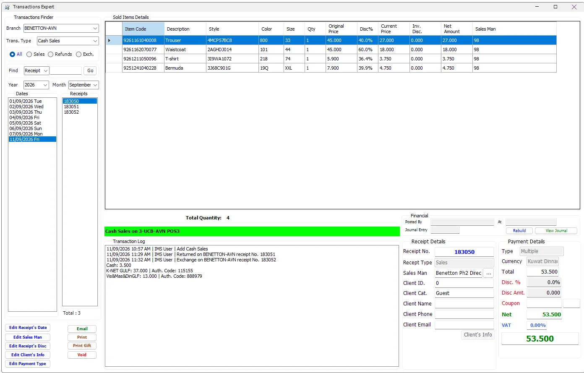
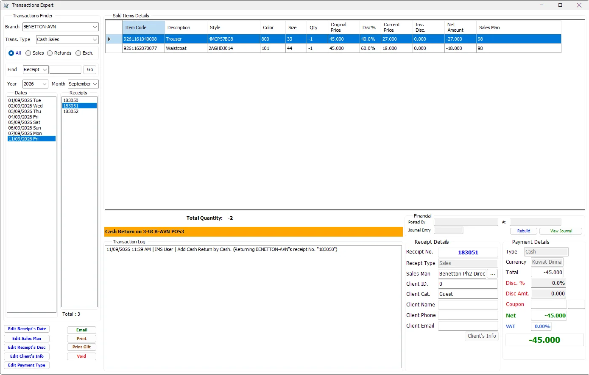
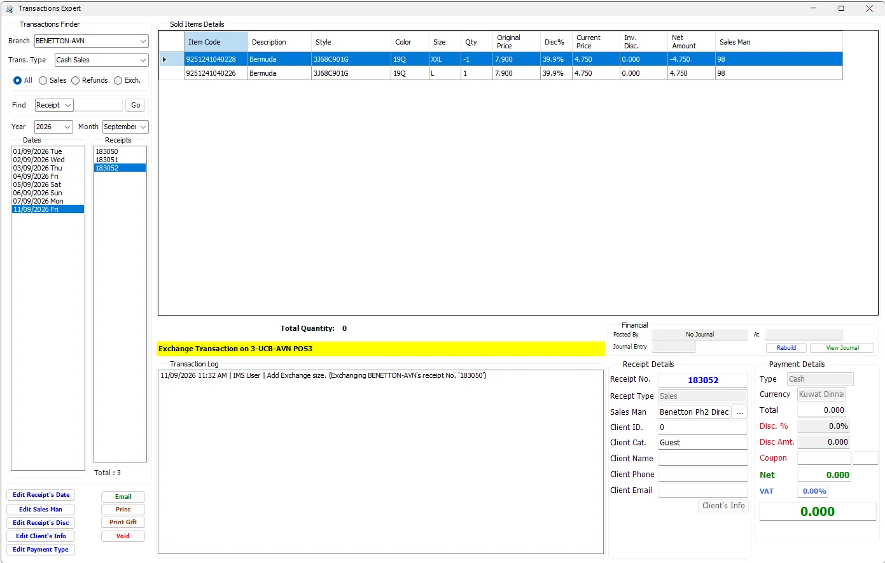
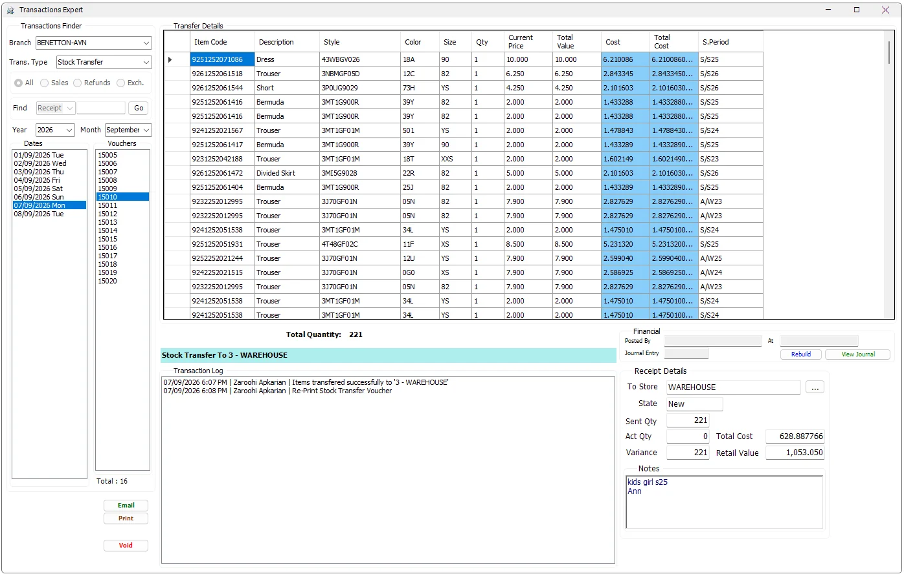
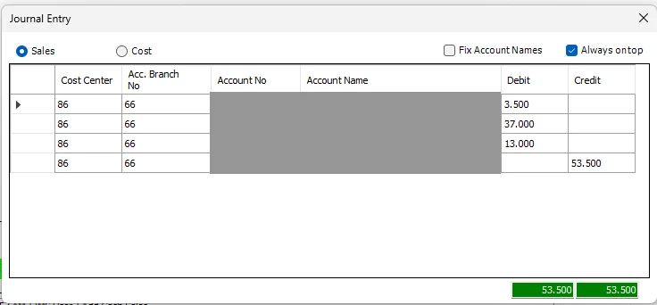

Transactions Expert
Transactions Expert is the controlled administration and audit workspace for completed Cash Sales, Credit Sales and Stock Transfers. It can locate historical transactions, reconstruct their operational and financial details, show the transaction history, perform authorized corrections, reprint/email documents, void eligible transactions and inspect or rebuild IMS journal entries.
What Transactions Expert is for
Transactions Expert is deliberately different from Sales Transactions. Sales Transactions creates new POS activity; Transactions Expert works on transactions that already exist. It is therefore permission driven and applies financial-period, posting-state and transaction-state checks before allowing changes.
The screen can also be opened directly from other control/monitoring workflows. For example, Journals Monitoring can open the exact Sales or Stock Transfer transaction that requires investigation.
Transactions Finder
| Filter | Behavior |
|---|---|
| Branch | Selects the Store/Center whose transactions are being reviewed. The list is limited to Stores available to the current user. |
| Trans. Type | Cash Sales, Credit Sales or Stock Transfer. A transaction type is removed from the selector when the active user's policy does not allow viewing it. |
| All / Sales / Refunds / Exch. | For Sales transaction types, narrows the receipt list to normal sales, returns or exchange transactions. Stock Transfer mode uses vouchers and does not use this filter. |
| Year / Month / Dates / Receipts | Provides the normal history drill-down: year → month → business date → receipt/voucher. |
| Find: Receipt | Jumps directly to a known receipt/voucher number in the selected Branch and transaction type. |
| Find: Authorization Code | For Cash Sales, a terminal/card authorization code can be used to locate the receipt. IMS first asks for the Bank/card-machine group, then finds the matching transaction. If it belongs to another Branch, IMS can move to that Branch only when the user is authorized to view it. |
What IMS reconstructs for a selected receipt
Selecting a receipt does more than reload the item lines. Transactions Expert combines data from the transaction header, transaction details and related operational records so the user can review the complete history of the receipt.
| Area | Information shown |
|---|---|
| Sold Items Details | Sales/Return indicator, Item Code, Description, Style, Color, Size, Qty, Original Price, item discount, Current Price, invoice discount, Net Amount and Sales Man/Lady. |
| Receipt Details | Receipt No., receipt type, Sales Man/Lady, client identity/category/name/phone/email and credit information where applicable. |
| Payment Details | Payment method, currency, gross/net totals, receipt discount, coupon, VAT and redeemed/special-payment amounts where applicable. |
| Related value instruments | Voucher redemption/issuance, Credit Notes, Exchange Notes, Multiple Payments, Star Rewards redemption and terminal authorization codes where they belong to the selected receipt. |
| Transaction Log | Date/time, user and recorded action history. Related return/exchange activity and void reason can also appear here. |
| Financial | IMS journal status, journal number, posting user/time, View Journal and controlled Rebuild functions. |
VAT details
When VAT is enabled, Payment Details includes VAT Base, VAT % and VAT Amount. For sales, these values come from the saved/current invoice VAT context. For receipt-based returns, Transactions Expert derives the VAT from the original sale and earlier returns so the return remains within the original invoice's VAT totals.
Cash Sales

A Cash Sale exposes the broadest set of correction tools because it can contain direct payment methods, Multiple Payments, vouchers, Credit/Exchange Notes, loyalty redemption and terminal/card authorization codes.
The Transaction Log also links later activity to the original sale. In the example above, the original receipt records the subsequent return and size-exchange receipts, giving the user one place to follow the receipt history.
Cash Return

Cash Returns keep the original merchandise and pricing context but represent the reversal with negative quantities and values. Refund payment information and related loyalty/voucher/note effects can therefore be inspected from the same administrative screen.
Exchange Size transaction

The returned item appears with a negative quantity and the replacement item with a positive quantity. The log retains the original receipt reference, so the user can trace the exchange back to the sale that created it.
Credit Sales and Credit Returns
Credit transactions use the same historical browser but intentionally expose a more restricted edit set than Cash Sales. Transactions Expert can review the credit customer's receipt, item lines, credit information, totals and transaction history, while payment-type/client editing that belongs specifically to Cash Sales is not offered in the same way.
Credit-limit information is displayed when the customer is credit limited, and IMS protects edits that would make the transaction invalid for the customer's available credit.
Authorized corrections
Transactions Expert does not simply make the historical receipt editable. Each correction is started as a specific action and is checked against the user's Group Policy, the transaction's financial period and—where relevant—whether the transaction has already been posted to the Financial System.
| Action | Scope and behavior |
|---|---|
| Edit Receipt's Date | Available for eligible Sales/Credit transactions. The new date must belong to an open financial period. A transaction already posted to the Financial System cannot be changed. If the original receipt issued a voucher, IMS warns that changing the receipt date does not change that voucher's expiry date. |
| Edit Sales Man | Can change the receipt Sales Man/Lady and, while editing, individual item lines can also be assigned to a different Sales Man/Lady. |
| Edit Receipt's Disc | Allows controlled percentage/amount adjustment. IMS recalculates the receipt and checks dependent payments, vouchers and Credit Notes before accepting the change. |
| Edit Client's Info | Cash Sales can update the customer attached to the historical receipt. Because customer identity can affect discount, loyalty and special payments, IMS recalculates and validates the dependent values before saving. |
| Edit Payment Type | Cash Sales can move to another eligible payment method, including Multiple, Voucher, Credit Note, Exchange Note and loyalty payment workflows. Terminal/card methods can require authorization codes. |
| Change transfer destination | For Stock Transfers, the destination can be changed only while the transfer is still in the New state and before receiving activity has started. |
Editing a historical payment
Payment editing follows the same special-payment rules used by Sales Transactions rather than treating Payment Type as a simple text field. A change can invoke Multiple Payments, voucher redemption, Credit Notes, Exchange Notes or Star Rewards. IMS checks whether an issued/used value instrument can still be safely changed before saving the new payment allocation.
When the selected payment method represents a configured bank/card terminal, IMS requires its authorization code. With Multiple Payments, each terminal payment that needs authorization is handled separately.
Editing a historical receipt discount
The receipt discount can be entered as a percentage or amount. IMS recalculates the item allocation and receipt totals, then validates whether the new value remains compatible with the current payment. Changes that affect Credit Notes or redeemed/issued vouchers are accepted only when those dependent records can also be adjusted safely.
Editing historical client information
Changing the client can affect VIP/customer discount, credit information and Star Rewards history. Transactions Expert therefore reloads/recalculates the customer-dependent values and can require the payment to be reviewed again if the receipt value or payment eligibility changes.
Card/terminal authorization codes
Authorization Codes are part of the transaction audit data for payment methods configured with a Bank/card-machine code. IMS records a six-character authorization code for the applicable terminal payment and prevents reuse of the same code for the same payment method.
These codes are useful later because Transactions Expert can search a Cash Sale by Authorization Code and Bank, even when the cashier/user does not know the original receipt number.
Voided / deleted transactions
Void is a controlled reversal, not a simple row delete. IMS requires the appropriate delete/void policy, an open financial period and a transaction that has not already been posted to the Financial System. The user must enter a Void Reason before the action can continue.
Before voiding a Sales receipt, IMS also checks dependent records such as issued/redeemed vouchers, Credit Notes, Exchange Notes, customer credit and loyalty activity. If a dependent value has already been consumed by another receipt, IMS can block the void instead of leaving the transaction history inconsistent.
When a void is allowed, IMS reverses the affected operational links/balances and records the action. The original item detail is retained so an authorized reviewer can use View Deleted Items to inspect what the voided receipt originally contained. The Void Reason is also included in the transaction history.
Stock Transfer

| Transfer area | Meaning |
|---|---|
| Transfer Details | Item Code, Description, Style, Color, Size, Qty, Current Price, Total Value and Statistical Period. |
| Cost / Total Cost | Visible only when the active user is allowed to view COGS. |
| To Store | Destination Store. It can be changed only for a transfer whose state is still New and only by an authorized user. |
| State | Current transfer state, reflecting whether receiving activity has begun/completed or the voucher has been deleted. |
| Sent Qty / Act Qty / Variance | Quantity sent, actual quantity received and their difference. |
| Total Cost / Retail Value | Cost and retail valuation of the transfer. |
| Notes / Transaction Log | Transfer notes plus the chronological user/action history. |
Corrupted Stock Transfer recovery
Transactions Expert compares the transfer header quantity with its detail lines. If they do not agree, IMS identifies the voucher as corrupted and exposes the administrator Fix recovery action.
The recovery process can reconstruct the transfer detail from the locally recorded transfer log when a valid log is available; otherwise it can recalculate the transfer header quantity/cost/retail totals from the existing detail rows. After recovery, the journal can also be rebuilt. This function is intended for system recovery, not normal transfer editing.
Financial status and Journal Entry
The Financial panel distinguishes a transaction with no IMS journal from one whose journal exists and/or has been posted. It shows the journal number, posting user and posting time when available.

The Journal Entry viewer shows Cost Center, Accounting Branch, Account No., Account Name, Debit and Credit. Sales and Cost switch between the two journal views.
Fix Account Names reloads account names from the financial database when required. Always on top keeps the Journal Entry window visible while the source transaction is reviewed. Debit/Credit totals are highlighted green when the journal balances and red when it does not.
Rebuild Journal
Rebuild regenerates the IMS journal using the selected transaction's current items, costs, discounts, payment allocation and voucher/note information. For Stock Transfers, it rebuilds the transfer journal from the source/destination and transfer values.
The action requires financial-posting authorization, an open financial period and a transaction that has not already been posted to the external Financial System.
Print, Email and Gift Receipt
Transactions Expert can reprint Cash Sales, Credit Sales and Stock Transfer documents when the user's policy allows the relevant print action. Email creates the transaction PDF and sends it through the configured IMS email service.
Print Gift is specific to an eligible positive Cash Sale; it is not offered for returns or Stock Transfers.
Item-line tools
For quick operational follow-up, the item grid provides copy actions for Item Code, EAN/Barcode and Style. This is useful when the user needs to paste the product identity into Items Search, stock investigation or another operational screen without retyping it.
Audit and control rules
Transactions Expert continuously applies three layers of control:
| Control | Purpose |
|---|---|
| Group Policies | Control which transaction types can be viewed and which edit/print/void/COGS/financial actions are available. |
| Financial Period | Historical transactions in a closed financial period cannot be modified by the normal edit/rebuild actions. |
| Financial posting state | Transactions already posted to the Financial System are protected from edits/voids/rebuilds that would invalidate the posted accounting entry. |